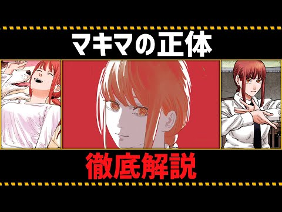

HaQei / アニメと易経 ・ サムネ確定版（C: 極太文字システム）
ep42 新サムネ — 極太・二重縁取り・多色へ作り替え
本人決定C＝サムネ生成システムを「勝ち組水準の極太・多色・縁取りの巨大文字」に格上げ（
BOLD_BENCHを既定化）。以後の本編サムネもこの基準。
寄せた勝ち筋：極太の黒縁取り＋白/黄の多色＋巨大文字（fontsize168）＋高彩度の金グロー＋好奇心ワード「なぜ」＋逆説（守るほど失う）。顔は法務方針で不可のため、文字圧・彩度・ワードで最大限ベンチに寄せた。
Before / After

世の中ベンチ（参考）

ご確認ください：この新サムネで確定してよいですか？（
確定なら、残る公開キット（ショート1本＝作品書き下ろし → TikTok素材）へ進み、Step11で全素材そろえて本人承認後にまとめてアップします。
releases/062/thumbnail.png 採用済み）／ 文字サイズ・色・コピー微調整があれば指定。確定なら、残る公開キット（ショート1本＝作品書き下ろし → TikTok素材）へ進み、Step11で全素材そろえて本人承認後にまとめてアップします。
システム＝
scripts/make-thumbnail-tierA.py（BOLD_BENCH既定・bold_bench_headline＝極太二重縁取り）。ベース＝content/062/visuals/THUMB_vivid.png（V_05_06高彩度）。